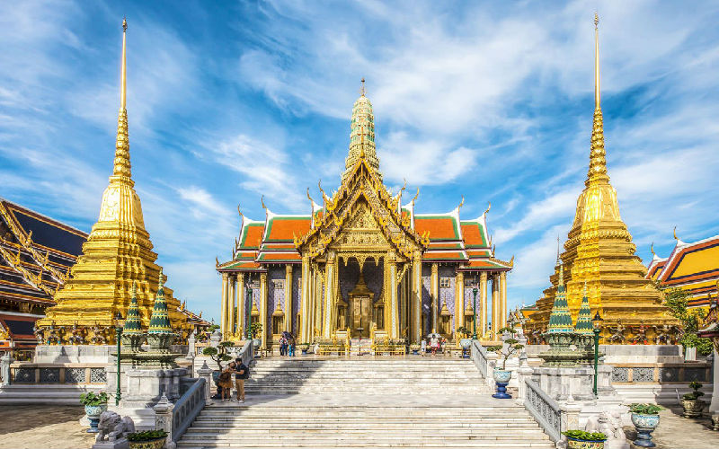

Templos de Bangkok · D3 · 27/12
Grand Palace, Wat Pho e Wat Arun
O conjunto mais imponente da cidade — o palácio real dourado, o Buda de Esmeralda, o Buda Reclinado de 46 m no Wat Pho e, do outro lado do rio, o Wat Arun. Abertura perfeita da viagem, com o ouro brilhando no sol
Melhores momentos: subir o Wat Arun no fim de tarde para a vista do rio; o Buda Reclinado dourado de Wat Pho
▸Sair cedo (abre 8h30, lota e esquenta); dress code rígido — ombros e joelhos cobertos; dá para ir a pé entre Palace e Pho e barco curto até Arun
🛺Brazuca ToursTemplos de Bangkok
Guia leva pelos três templos — bom para o primeiro dia sem se preocupar com logística